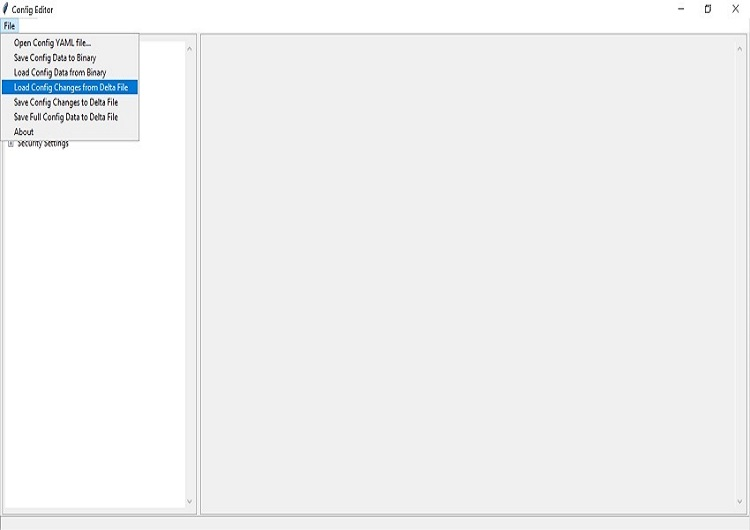

GPIO / CFIO Configuration
Modern chipsets pack multiple functions and are often constrained by the package size and limited number of pins. These Configurable IO (CFIO) pins need to be configured at boot time to connect them to selected functionality based on platform designs.
The selected functionality could be a General Purpose IO (GPIO) or some other dedicated function (SPI, I2C, etc.)
Refer to GPIO Configuration for more details,
A step-by-step guide to do this is provided below.
GPIO config data
Step1. In the console launch the “ConfigEditor” from “slimbootloader” folder.
ConfigEditor is run using ConfigEditor.py script:
python BootloaderCorePkg/Tools/ConfigEditor.py
{kind=link}
Step2. Open the “Config YAML” file, then select the description file according to your platform( eg. /Platform/CoffeelakeBoardPkg/CfgData/CfgDataDef.yaml”)

{kind=link}
Step 3. Load the “Config Delta” file from the same folder of the description file by selecting “Load Config Changes from Delta File” menu.
{kind=link}
{kind=link}
Step 4. At the menu panel in left, select the “GPIO Settings”, and Select GPIO number which needs to be updated.
{kind=link}
Refer to https://slimbootloader.github.io/tools/index.html#cfgtool for description regarding these pins .
- GPIO pins are grouped into different Community (e.g. Community 0, Community 1,etc.). Each Community consists of one or more GPIO groups. Refer to Corresponding EDS document for more details.
Step 5. Save the changes with “save config changes to Delta File” to the required board specific dlt file

{kind=link}
Changes shall be reflected into the dlt file. Open the corresponding dlt file in notepad and check if the value is updated accordingly.
Step 6. Now build the SBL and flash it. SBL will apply the new settings on subsequent boots.
For SBL build process, Please refer https://slimbootloader.github.io/getting-started/build-source.html
GenGpioData Tool
GenGpioData.py is a utility that converts the GPIO pin data from one format to other. When starting a new project, often times the GPIO information for that platform is available in a format that needs to be converted to yaml/dlt to be used in SBL. For example, the GPIO information for a platform may have to be retrieved from the chipset data sheet or from the CRB BIOS..
Run GenGpioData Tool
GenGpioData Tool is run using GenGpioData.py script:
python GenGpioData.py <option 1> <option 2> <option 3>
option 1 : GPIO input data file
option 2 : Output SBL format
option 3 : output path
Example: Python GenGpioData.py -if GpioTableXxx.h -of yaml -o .
Input is .h and output is .yaml:
python GenGpioData.py -if GpioTableXxx.h -of yaml -o .
Input is .h and output is .dlt:
python GenGpioData.py -if GpioTableXxx.h -of dlt -o .
Input is .csv and output is .yaml:
python GenGpioData.py -if GpioTablexx.csv -of yaml -o .
Input is .csv and output is .dlt:
python GenGpioData.py -if GpioTablexx.csv -of dlt -o .
Refer to https://slimbootloader.github.io/tools/index.html#cfgtool for description regarding GPIO tool supported formats .
GpioTablexxx.h file shall be imported from BIOS source. Depending upon requirement this table can be updated.
Example :Input format is .h and output generated is .yaml file
Using Config editor the generated Yaml file can be loaded and modified
Generated Yaml file looks like
{kind=link}